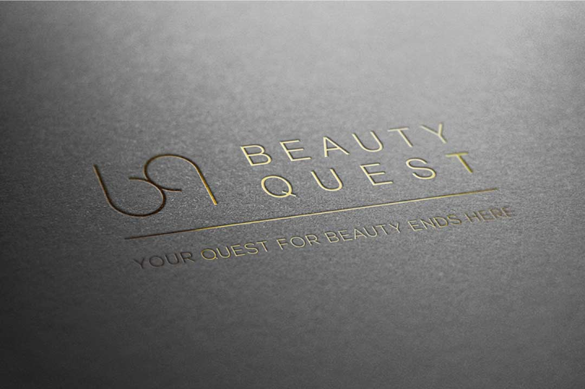
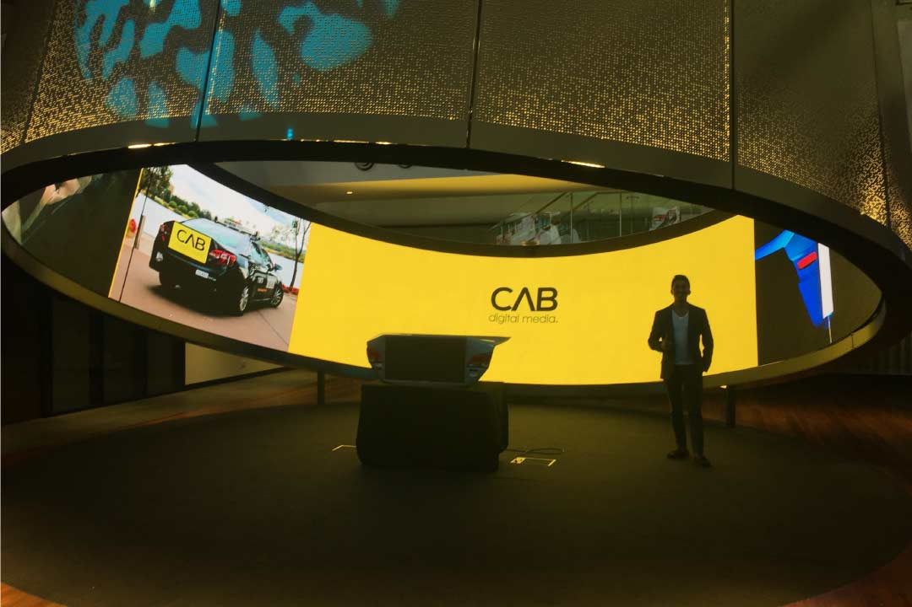
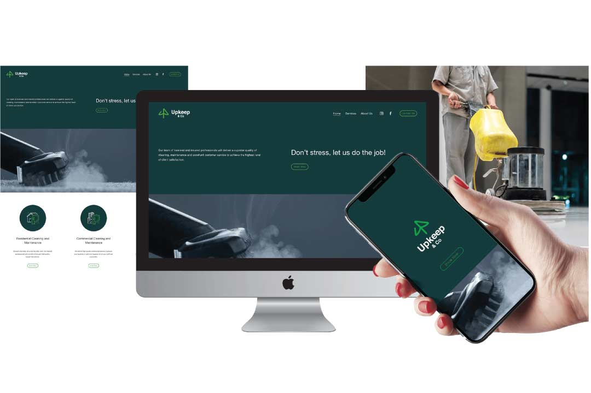
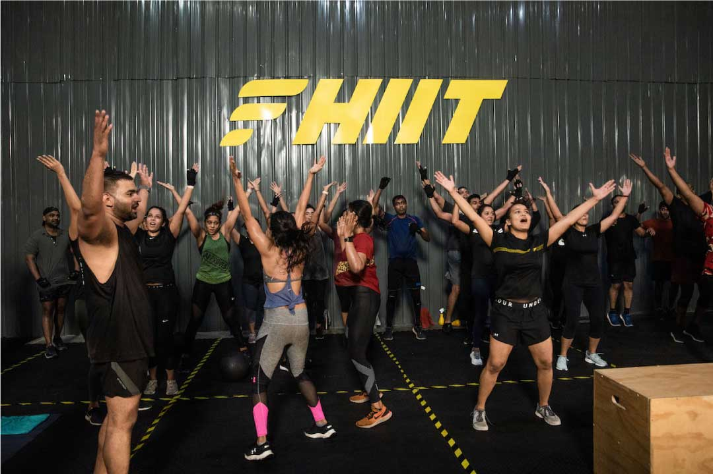
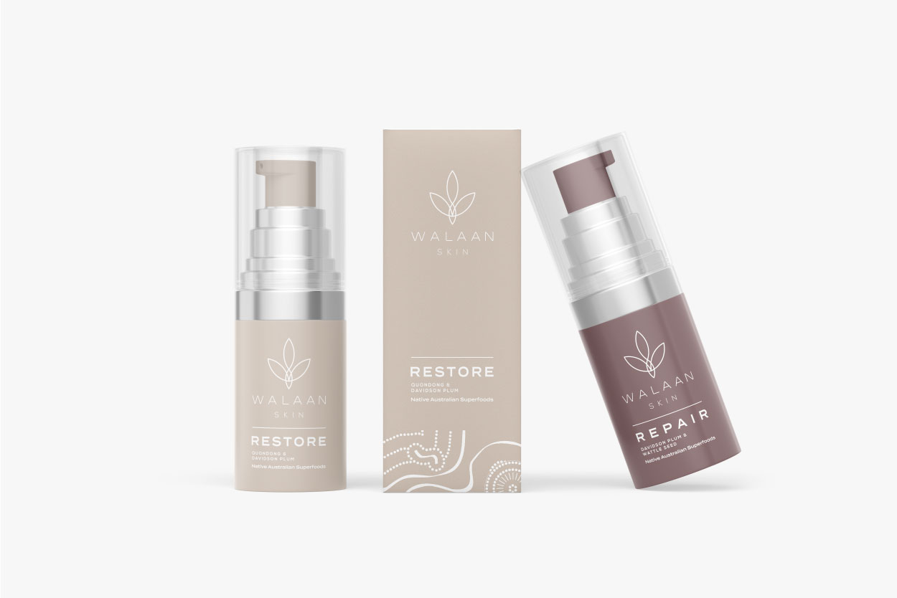
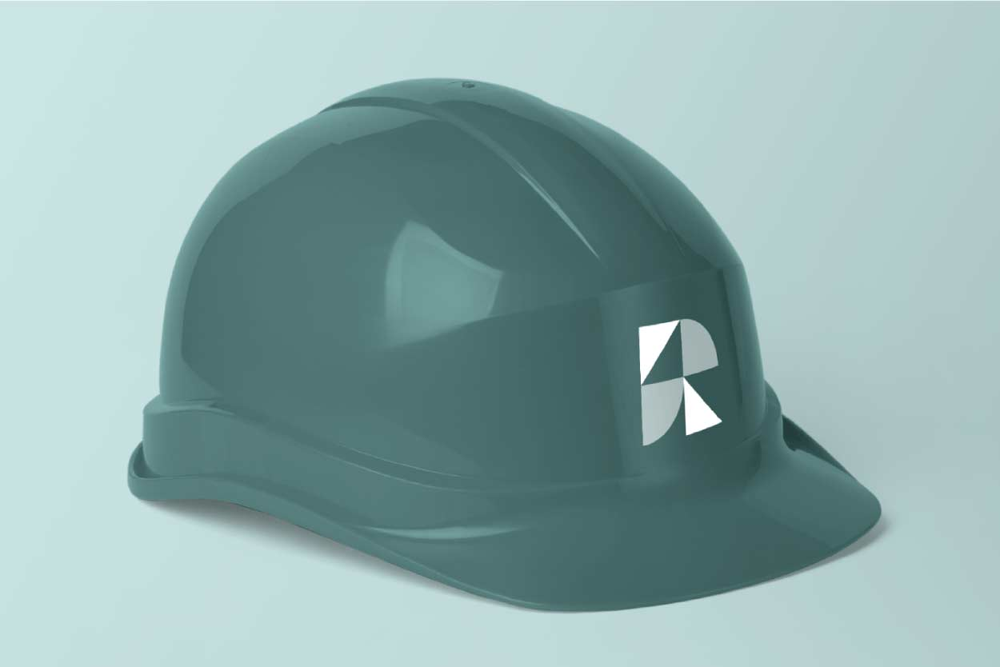

What Makes a Truly Great Logo in 2026?
Timeless principles meet current trends: simplicity, emotion, adaptability, and why human intention still wins.
Timeless principles meet current trends: simplicity, emotion, adaptability, and why human intention still wins.
Why fixed logos are giving way to dynamic systems that evolve across platforms and contexts.
Practical ways AI accelerates creativity while strategy and soul stay human-driven.

Beyond cold flat design — embracing texture, imperfection, and emotional warmth in 2026 identities.

The subconscious impact of visual elements and how we use them intentionally in client work.

Creating identities that move, respond, and feel alive across websites, apps, and social.

Building authentic, consistent identities that stand out in saturated online spaces.

Turning strategy into seamless digital experiences that extend your visual language.

Reducing digital carbon footprints and designing with long-term responsibility in mind.
From expressive custom type to neo-grotesques and variable fonts shaping brand voices.
Step-by-step look at how we turn ideas into powerful, lasting brand systems.
Using narrative to create deeper connections across every brand touchpoint.